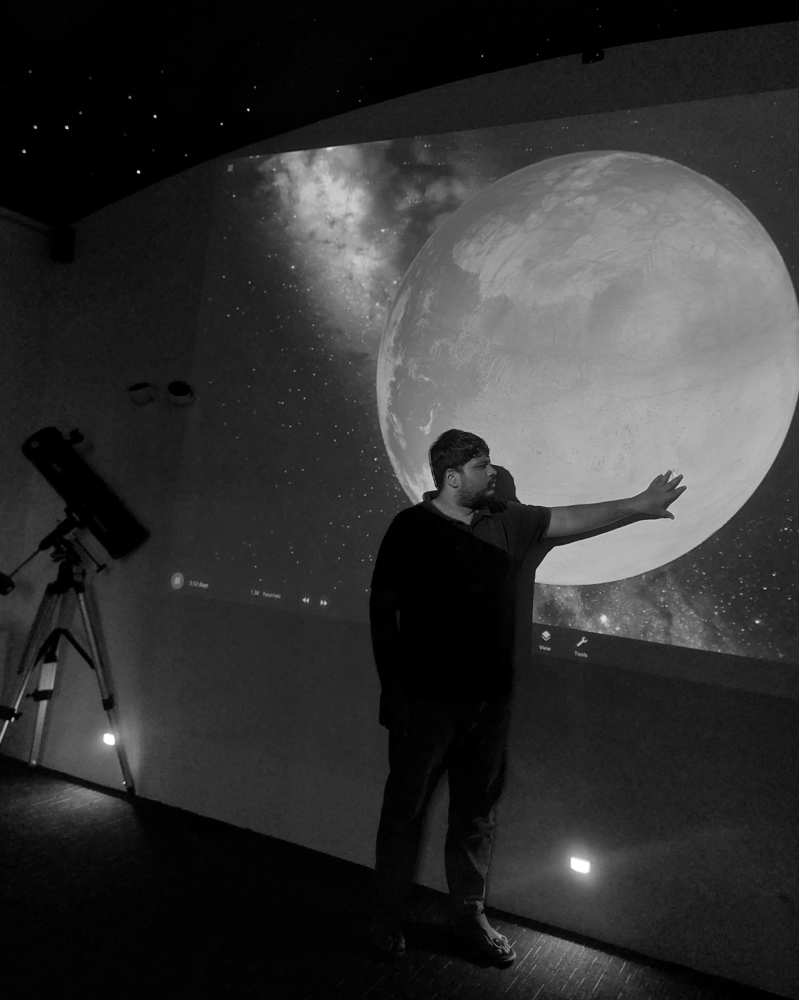

↳ 01
QuantumX
Founder & Scientific Lead since Oct 2025 — advancing quantum computing innovation and its real-world applications.
Quantum Researcher · Educator · Founder
I’m Ajmal — a physicist from Kerala working on molecular quantum mechanics, and the Founder & Scientific Lead of QuantumX, where I turn quantum science into programs people can actually learn from.

01
↳ 01
Founder & Scientific Lead since Oct 2025 — advancing quantum computing innovation and its real-world applications.
↳ 02
Doctoral work in Molecular Quantum Mechanics — decoherence, noise models, and quantum communication protocols.
↳ 03
Designing quantum and STEM curricula that translate research into classrooms, from schools to universities.
↳ 04
Founder of Q. Enthusiasts Kerala and creator of AJMAL PHY on YouTube — mentorship and resources for a growing quantum community.
02
A foundation in physics — from undergraduate study in Kerala to doctoral research in molecular quantum mechanics.
IBM Quantum · Python · C++ · MATLAB · Linux · Optoelectronics · Photonics · Electronics · VQE · QAOA
English · Hindi · Arabic (Professional) — Malayalam (Native) — Tamil (Conversational) · French (Basic)
2022 — Present
Kalasalingam Academy of Research and Education
Molecular Quantum Mechanics · Doctoral Researcher
2019 — 2021
Vellore Institute of Technology
Thesis: Decoherence in Quantum Communication Protocols
2015 — 2018
University of Calicut
Minor in Mathematics & Computer Science
03
Quantum communication, decoherence and noise models — and the digital divide in quantum education.
04
From lecture halls in Wayanad to founding QuantumX — bridging advanced quantum concepts and their practical implementations.
05
Open to quantum education initiatives, research collaborations, and applied projects that move quantum technology from theory to tangible impact.